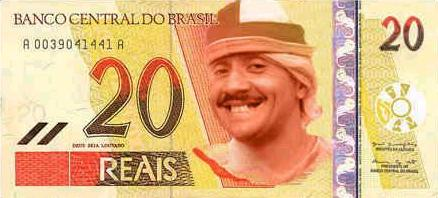

Dicionário do Nordestino
Letra A

ABESTADO - Otário. Tolo.
ABESTALHADO - Otário. Tolo.
ABILOLADO – Doido.
ABIROBADO - Maluco.
ABISCOITADO - Maluco, desorientado.
Voltar | Mais
ABESTADO - Otário. Tolo.
ABESTALHADO - Otário. Tolo.
ABILOLADO – Doido.
ABIROBADO - Maluco.
ABISCOITADO - Maluco, desorientado.
Voltar | Mais